Designing and Developing Multi-Container and Microservice-Based .NET Applications
Developing containerized microservice applications means you are building multi-container applications. However, a multi-container application could also be simpler—for example, a three-tier application—and might not be built using a microservice architecture.
Earlier we raised the question “Is Docker necessary when building a microservice architecture?” The answer is a clear no. Docker is an enabler and can provide significant benefits, but containers and Docker are not a hard requirement for microservices. As an example, you could create a microservices-based application with or without Docker when using Azure Service Fabric, which supports microservices running as simple processes or as Docker containers.
However, if you know how to design and develop a microservices-based application that is also based on Docker containers, you will be able to design and develop any other, simpler application model. For example, you might design a three-tier application that also requires a multi-container approach. Because of that, and because microservice architectures are an important trend within the container world, this section focuses on a microservice architecture implementation using Docker containers.
This section focuses on developing a hypothetical server-side enterprise application.
The hypothetical application handles requests by executing business logic, accessing databases, and then returning HTML, JSON, or XML responses. We will say that the application must support a variety of clients, including desktop browsers running Single Page Applications (SPAs), traditional web apps, mobile web apps, and native mobile apps. The application might also expose an API for third parties to consume. It should also be able to integrate its microservices or external applications asynchronously, so that approach will help resiliency of the microservices in the case of partial failures.
The application will consist of these types of components:
The application will require high scalability, while allowing its vertical subsystems to scale out autonomously, because certain subsystems will require more scalability than others.
The application must be able to be deployed in multiple infrastructure environments (multiple public clouds and on-premises) and ideally should be cross-platform, able to move from Linux to Windows (or vice versa) easily.
We also assume the following about the development process for the application:
What should the application deployment architecture be? The specifications for the application, along with the development context, strongly suggest that you should architect the application by decomposing it into autonomous subsystems in the form of collaborating microservices and containers, where a microservice is a container.
In this approach, each service (container) implements a set of cohesive and narrowly related functions. For example, an application might consist of services such as the catalog service, ordering service, basket service, user profile service, etc.
Microservices communicate using protocols such as HTTP (REST), but also asynchronously (for example, using AMQP) whenever possible, especially when propagating updates with integration events.
Microservices are developed and deployed as containers independently of one another. This means that a development team can be developing and deploying a certain microservice without impacting other subsystems.
Each microservice has its own database, allowing it to be fully decoupled from other microservices. When necessary, consistency between databases from different microservices is achieved using application-level integration events (through a logical event bus), as handled in Command and Query Responsibility Segregation (CQRS). Because of that, the business constraints must embrace eventual consistency between the multiple microservices and related databases.
So that you can focus on the architecture and technologies instead of thinking about a hypothetic business domain that you might not know, we have selected a well-known business domain—namely, a simplified e-commerce (e-shop) application that presents a catalog of products, takes orders from customers, verifies inventory, and performs other business functions. This container-based application source code is available in the eShopOnContainers GitHub repo.
The application consists of multiple subsystems, including several store UI front ends (a Web application and a native mobile app), along with the back-end microservices and containers for all the required server-side operations with several API Gateways as consolidated entry points to the internal microservices. Figure 6-1 shows the architecture of the reference application.
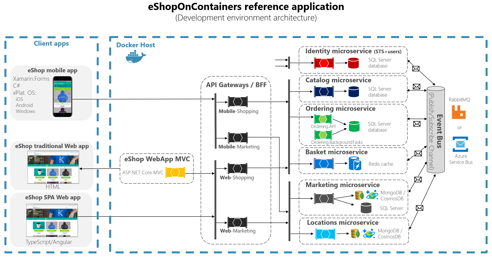
Figure 6-1. The eShopOnContainers reference application architecture for development environment
Hosting environment. In Figure 6-1, you see several containers deployed within a single Docker host. That would be the case when deploying to a single Docker host with the docker-compose up command. However, if you are using an orchestrator or container cluster, each container could be running in a different host (node), and any node could be running any number of containers, as we explained earlier in the architecture section.
Communication architecture. The eShopOnContainers application uses two communication types, depending on the kind of the functional action (queries versus updates and transactions):
The application is deployed as a set of microservices in the form of containers. Client apps can communicate with those microservices running as containers through the public URLs published by the API Gateways.
In the sample application, each microservice owns its own database or data source, although all SQL Server databases are deployed as a single container. This design decision was made only to make it easy for a developer to get the code from GitHub, clone it, and open it in Visual Studio or Visual Studio Code. Or alternatively, it makes it easy to compile the custom Docker images using .NET Core CLI and the Docker CLI, and then deploy and run them in a Docker development environment. Either way, using containers for data sources lets developers build and deploy in a matter of minutes without having to provision an external database or any other data source with hard dependencies on infrastructure (cloud or on-premises).
In a real production environment, for high availability and for scalability, the databases should be based on database servers in the cloud or on-premises, but not in containers.
Therefore, the units of deployment for microservices (and even for databases in this application) are Docker containers, and the reference application is a multi-container application that embraces microservices principles.
A microservice based solution like this has many benefits:
Each microservice is relatively small—easy to manage and evolve. Specifically:
It is possible to scale out individual areas of the application. For instance, the catalog service or the basket service might need to be scaled out, but not the ordering process. A microservices infrastructure will be much more efficient with regard to the resources used when scaling out than a monolithic architecture would be.
You can divide the development work between multiple teams. Each service can be owned by a single development team. Each team can manage, develop, deploy, and scale their service independently of the rest of the teams.
Issues are more isolated. If there is an issue in one service, only that service is initially impacted (except when the wrong design is used, with direct dependencies between microservices), and other services can continue to handle requests. In contrast, one malfunctioning component in a monolithic deployment architecture can bring down the entire system, especially when it involves resources, such as a memory leak. Additionally, when an issue in a microservice is resolved, you can deploy just the affected microservice without impacting the rest of the application.
You can use the latest technologies. Because you can start developing services independently and run them side by side (thanks to containers and .NET Core), you can start using the latest technologies and frameworks expediently instead of being stuck on an older stack or framework for the whole application.
A microservice based solution like this also has some drawbacks:
Distributed application. Distributing the application adds complexity for developers when they are designing and building the services. For example, developers must implement interservice communication using protocols like HTTP or AMPQ, which adds complexity for testing and exception handling. It also adds latency to the system.
Deployment complexity. An application that has dozens of microservices types and needs high scalability (it needs to be able to create many instances per service and balance those services across many hosts) means a high degree of deployment complexity for IT operations and management. If you are not using a microservice-oriented infrastructure (like an orchestrator and scheduler), that additional complexity can require far more development efforts than the business application itself.
Atomic transactions. Atomic transactions between multiple microservices usually are not possible. The business requirements have to embrace eventual consistency between multiple microservices.
Increased global resource needs (total memory, drives, and network resources for all the servers or hosts). In many cases, when you replace a monolithic application with a microservices approach, the amount of initial global resources needed by the new microservice-based application will be larger than the infrastructure needs of the original monolithic application. This is because the higher degree of granularity and distributed services requires more global resources. However, given the low cost of resources in general and the benefit of being able to scale out just certain areas of the application compared to long-term costs when evolving monolithic applications, the increased use of resources is usually a good tradeoff for large, long-term applications.
Issues with direct client-to-microservice communication. When the application is large, with dozens of microservices, there are challenges and limitations if the application requires direct client-to-microservice communications. One problem is a potential mismatch between the needs of the client and the APIs exposed by each of the microservices. In certain cases, the client application might need to make many separate requests to compose the UI, which can be inefficient over the Internet and would be impractical over a mobile network. Therefore, requests from the client application to the back-end system should be minimized.
Another problem with direct client-to-microservice communications is that some microservices might be using protocols that are not Web-friendly. One service might use a binary protocol, while another service might use AMQP messaging. Those protocols are not firewall-friendly and are best used internally. Usually, an application should use protocols such as HTTP and WebSockets for communication outside of the firewall.
Yet another drawback with this direct client-to-service approach is that it makes it difficult to refactor the contracts for those microservices. Over time developers might want to change how the system is partitioned into services. For example, they might merge two services or split a service into two or more services. However, if clients communicate directly with the services, performing this kind of refactoring can break compatibility with client apps.
As mentioned in the architecture section, when designing and building a complex application based on microservices, you might consider the use of multiple fine-grained API Gateways instead of the simpler direct client-to-microservice communication approach.
Partitioning the microservices. Finally, no matter which approach you take for your microservice architecture, another challenge is deciding how to partition an end-to-end application into multiple microservices. As noted in the architecture section of the guide, there are several techniques and approaches you can take. Basically, you need to identify areas of the application that are decoupled from the other areas and that have a low number of hard dependencies. In many cases, this is aligned to partitioning services by use case. For example, in our e-shop application, we have an ordering service that is responsible for all the business logic related to the order process. We also have the catalog service and the basket service that implement other capabilities. Ideally, each service should have only a small set of responsibilities. This is similar to the single responsibility principle (SRP) applied to classes, which states that a class should only have one reason to change. But in this case, it is about microservices, so the scope will be larger than a single class. Most of all, a microservice has to be completely autonomous, end to end, including responsibility for its own data sources.
The external architecture is the microservice architecture composed by multiple services, following the principles described in the architecture section of this guide. However, depending on the nature of each microservice, and independently of high-level microservice architecture you choose, it is common and sometimes advisable to have different internal architectures, each based on different patterns, for different microservices. The microservices can even use different technologies and programming languages. Figure 6-2 illustrates this diversity.
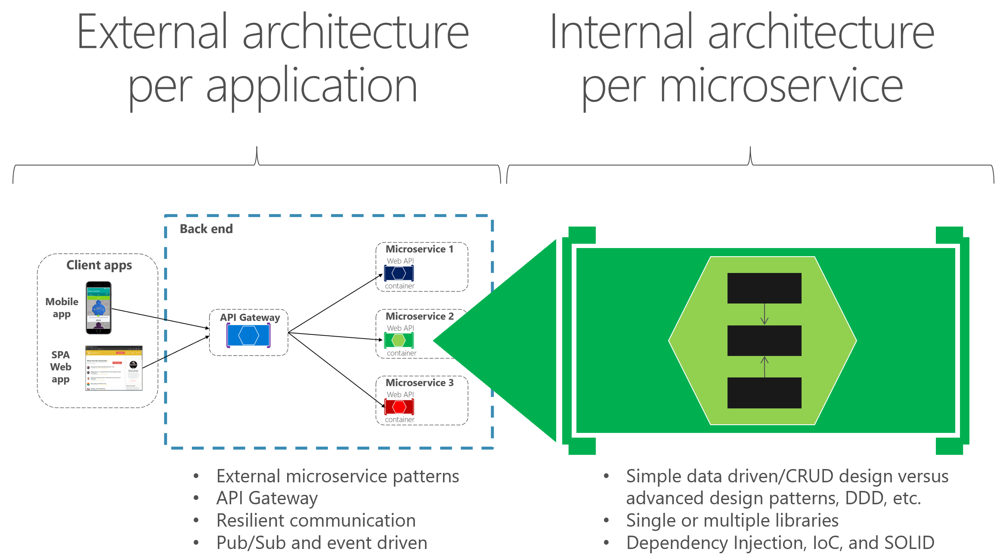
Figure 6-2. External versus internal architecture and design
For instance, in our eShopOnContainers sample, the catalog, basket, and user profile microservices are simple (basically, CRUD subsystems). Therefore, their internal architecture and design is straightforward. However, you might have other microservices, such as the ordering microservice, which is more complex and represents ever-changing business rules with a high degree of domain complexity. In cases like these, you might want to implement more advanced patterns within a particular microservice, like the ones defined with domain-driven design (DDD) approaches, as we are doing in the eShopOnContainers ordering microservice. (We will review these DDD patterns in the section later that explains the implementation of the eShopOnContainers ordering microservice.)
Another reason for a different technology per microservice might be the nature of each microservice. For example, it might be better to use a functional programming language like F#, or even a language like R if you are targeting AI and machine learning domains, instead of a more object-oriented programming language like C#.
The bottom line is that each microservice can have a different internal architecture based on different design patterns. Not all microservices should be implemented using advanced DDD patterns, because that would be over-engineering them. Similarly, complex microservices with ever-changing business logic should not be implemented as CRUD components, or you can end up with low-quality code.
There are many architectural patterns used by software architects and developers. The following are a few (mixing architecture styles and architecture patterns):
You can also build microservices with many technologies and languages, such as ASP.NET Core Web APIs, NancyFx, ASP.NET Core SignalR (available with .NET Core 2), F#, Node.js, Python, Java, C++, GoLang, and more.
The important point is that no particular architecture pattern or style, nor any particular technology, is right for all situations. Figure 6-3 shows some approaches and technologies (although not in any particular order) that could be used in different microservices.
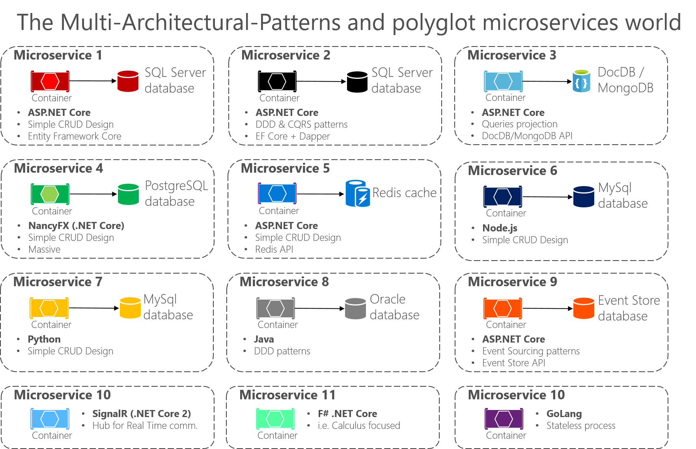
Figure 6-3. Multi-architectural patterns and the polyglot microservices world
As shown in Figure 6-3, in applications composed of many microservices (Bounded Contexts in domain-driven design terminology, or simply “subsystems” as autonomous microservices), you might implement each microservice in a different way. Each might have a different architecture pattern and use different languages and databases depending on the application’s nature, business requirements, and priorities. In some cases, the microservices might be similar. But that is not usually the case, because each subsystem’s context boundary and requirements are usually different.
For instance, for a simple CRUD maintenance application, it might not make sense to design and implement DDD patterns. But for your core domain or core business, you might need to apply more advanced patterns to tackle business complexity with ever-changing business rules.
Especially when you deal with large applications composed by multiple sub-systems, you should not apply a single top-level architecture based on a single architecture pattern. For instance, CQRS should not be applied as a top-level architecture for a whole application, but might be useful for a specific set of services.
There is no silver bullet or a right architecture pattern for every given case. You cannot have “one architecture pattern to rule them all.” Depending on the priorities of each microservice, you must choose a different approach for each, as explained in the following sections.
This section outlines how to create a simple microservice that performs create, read, update, and delete (CRUD) operations on a data source.
From a design point of view, this type of containerized microservice is very simple. Perhaps the problem to solve is simple, or perhaps the implementation is only a proof of concept.
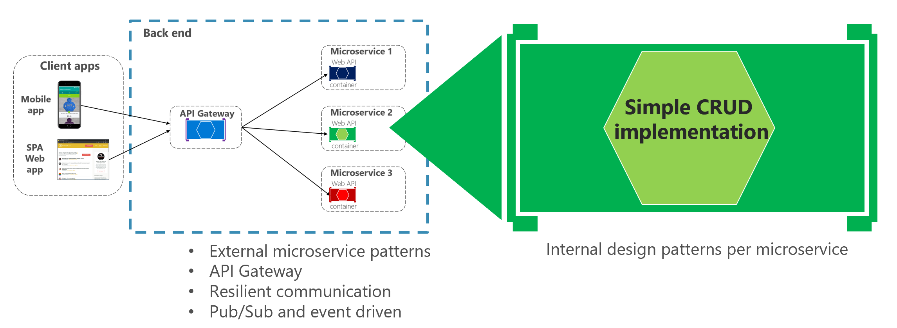
Figure 6-4. Internal design for simple CRUD microservices
An example of this kind of simple data-drive service is the catalog microservice from the eShopOnContainers sample application. This type of service implements all its functionality in a single ASP.NET Core Web API project that includes classes for its data model, its business logic, and its data access code. It also stores its related data in a database running in SQL Server (as another container for dev/test purposes), but could also be any regular SQL Server host, as shown in Figure 6-5.
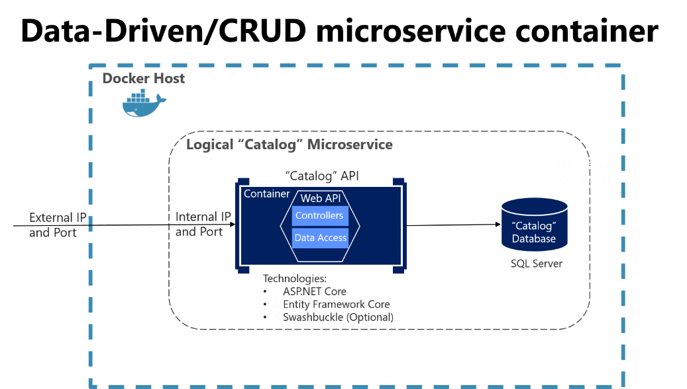
Figure 6-5. Simple data-driven/CRUD microservice design
When you are developing this kind of service, you only need ASP.NET Core and a data-access API or ORM like Entity Framework Core. You could also generate Swagger metadata automatically through Swashbuckle to provide a description of what your service offers, as explained in the next section.
Note that running a database server like SQL Server within a Docker container is great for development environments, because you can have all your dependencies up and running without needing to provision a database in the cloud or on-premises. This is very convenient when running integration tests. However, for production environments, running a database server in a container is not recommended, because you usually do not get high availability with that approach. For a production environment in Azure, it is recommended that you use Azure SQL DB or any other database technology that can provide high availability and high scalability. For example, for a NoSQL approach, you might choose CosmosDB.
Finally, by editing the Dockerfile and docker-compose.yml metadata files, you can configure how the image of this container will be created—what base image it will use, plus design settings such as internal and external names and TCP ports.
To implement a simple CRUD microservice using .NET Core and Visual Studio, you start by creating a simple ASP.NET Core Web API project (running on .NET Core so it can run on a Linux Docker host), as shown in Figure 6-6.
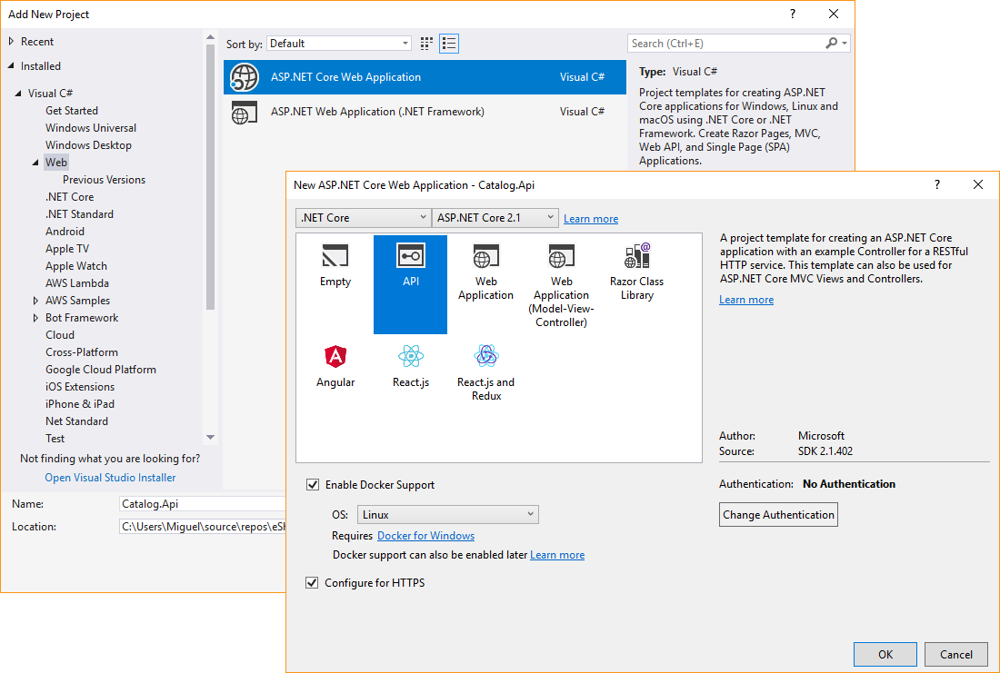
Figure 6-6. Creating an ASP.NET Core Web API project in Visual Studio
After creating the project, you can implement your MVC controllers as you would in any other Web API project, using the Entity Framework API or other API. In a new Web API project, you can see that the only dependency you have in that microservice is on ASP.NET Core itself. Internally, within the Microsoft.AspNetCore.All dependency, it is referencing Entity Framework and many other .NET Core Nuget packages, as shown in Figure 6-7.
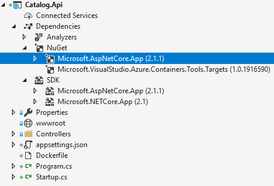
Figure 6-7. Dependencies in a simple CRUD Web API microservice
Entity Framework (EF) Core is a lightweight, extensible, and cross-platform version of the popular Entity Framework data access technology. EF Core is an object-relational mapper (ORM) that enables .NET developers to work with a database using .NET objects.
The catalog microservice uses EF and the SQL Server provider because its database is running in a container with the SQL Server for Linux Docker image. However, the database could be deployed into any SQL Server, such as Windows on-premises or Azure SQL DB. The only thing you would need to change is the connection string in the ASP.NET Web API microservice.
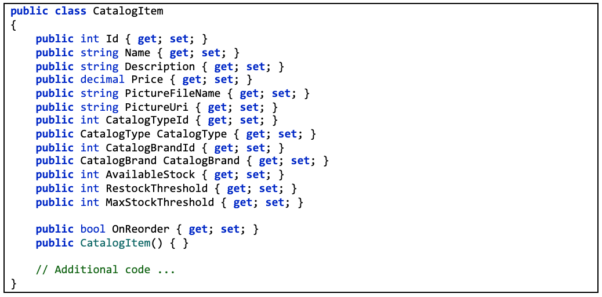With EF Core, data access is performed by using a model. A model is made up of (domain model) entity classes and a derived context (DbContext) that represents a session with the database, allowing you to query and save data. You can generate a model from an existing database, manually code a model to match your database, or use EF migrations to create a database from your model, using the code-first approach (that makes it easy to evolve the database as your model changes over time). For the catalog microservice we are using the last approach. You can see an example of the CatalogItem entity class in the following code example, which is a simple Plain Old CLR Object (POCO) entity class.
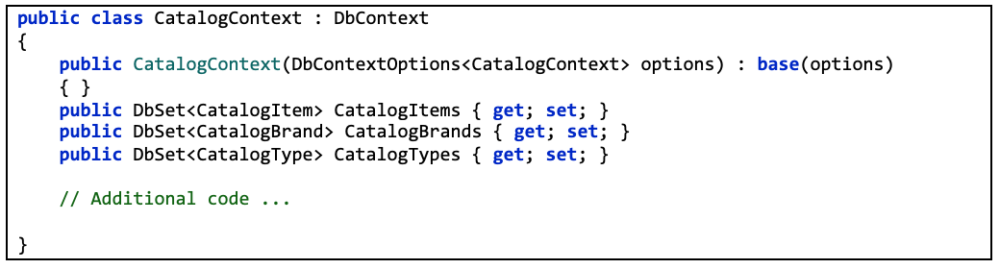You also need a DbContext that represents a session with the database. For the catalog microservice, the CatalogContext class derives from the DbContext base class, as shown in the following example:
You can have additional DbContext implementations. For example, in the sample Catalog.API microservice, there’s a second DbContext named CatalogContextSeed where it automatically populates the sample data the first time it tries to access the database. This method is useful for demo data and for automated testing scenarios, as well.
Within the DbContext, you use the OnModelCreating method to customize object/database entity mappings and other EF extensibility points.
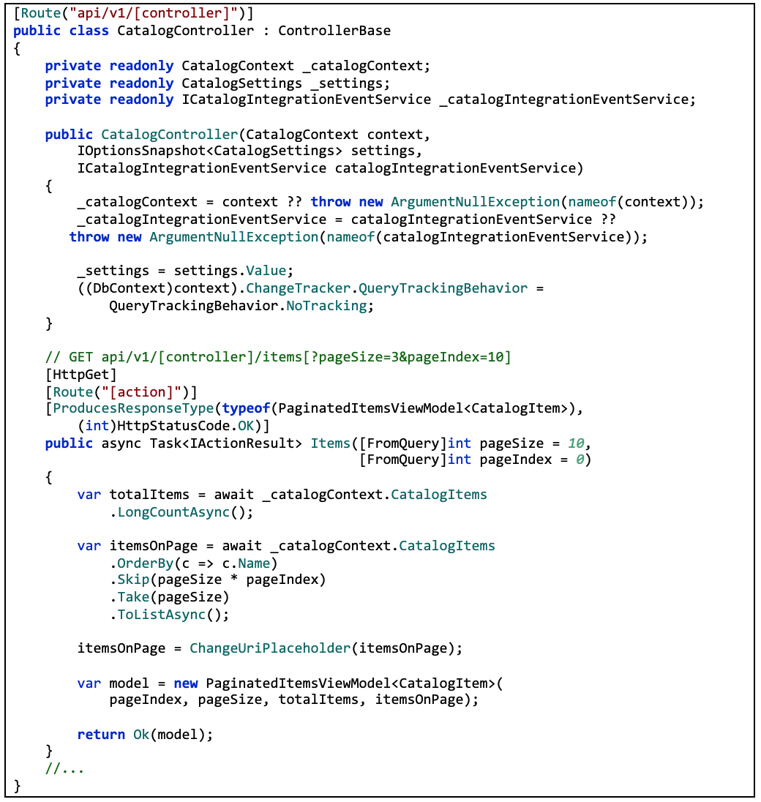Instances of your entity classes are typically retrieved from the database using Language Integrated Query (LINQ), as shown in the following example:
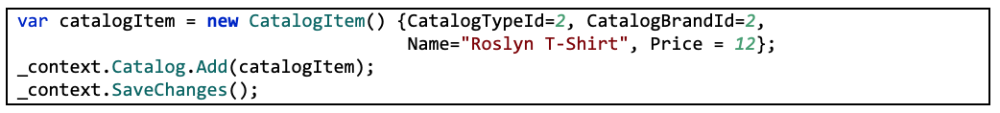Data is created, deleted, and modified in the database using instances of your entity classes. You could add code like the following hard-coded example (mock data, in this case) to your Web API controllers.
In ASP.NET Core you can use Dependency Injection (DI) out of the box. You do not need to set up a third-party Inversion of Control (IoC) container, although you can plug your preferred IoC container into the ASP.NET Core infrastructure if you want. In this case, it means that you can directly inject the required EF DBContext or additional repositories through the controller constructor.
In the example above of the CatalogController class, we are injecting an object of CatalogContext type plus other objects through the CatalogController() constructor.
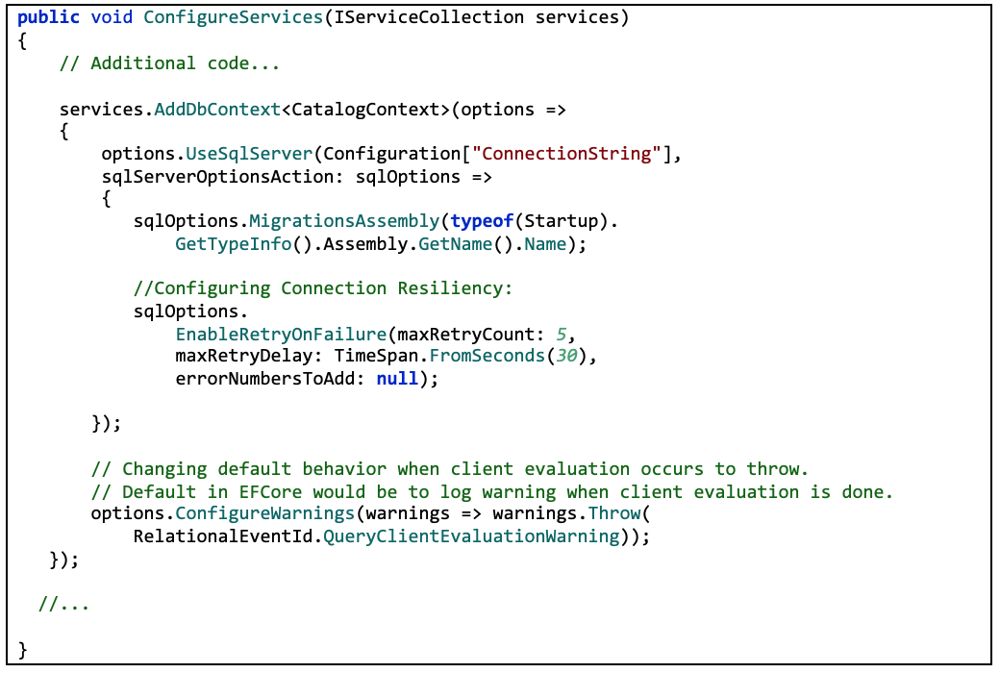An important configuration to set up in the Web API project is the DbContext class registration into the service’s IoC container. You typically do so in the Startup class by calling the services.AddDbContext() method inside the ConfigureServices() method, as shown in the following example:
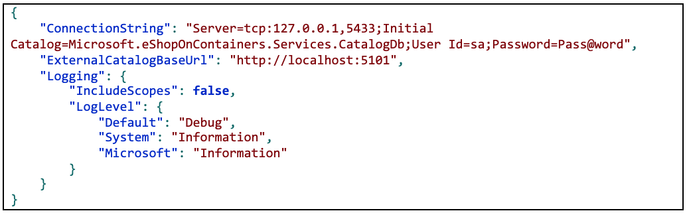You can use the ASP.NET Core settings and add a ConnectionString property to your settings.json file as shown in the following example:
The settings.json file can have default values for the ConnectionString property or for any other property. However, those properties will be overridden by the values of environment variables that you specify in the docker-compose.override.yml file, when using Docker.
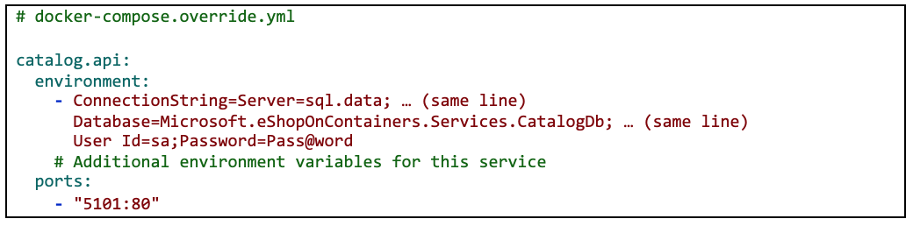From your docker-compose.yml or docker-compose.override.yml files, you can initialize those environment variables so that Docker will set them up as OS environment variables for you, as shown in the following docker-compose.override.yml file (the connection string and other lines wrap in this example, but it would not wrap in your own file).
The docker-compose.yml files at the solution level are not only more flexible than configuration files at the project or microservice level, but also more secure if you override the environment variables declared at the docker-compose files with values set from your deployment tools, like from Azure DevOps Services Docker deployment tasks.
Finally, you can get that value from your code by using Configuration[“ConnectionString”], as shown in the ConfigureServices method in an earlier code example.
However, for production environments, you might want to explore additional ways on how to store secrets like the connection strings. An excellent way to manage application secrets is using Azure Key Vault.
Azure Key Vault helps to store and safeguard cryptographic keys and secrets used by your cloud applications and services. A secret is anything you want to keep strict control of, like API keys, connection strings, passwords, etc. and strict control includes usage logging, setting expiration, managing access, among others.
Azure Key Vault allows a very detailed control level of the application secrets usage without the need to let anyone know them. The secrets can even be rotated for enhanced security without disrupting development or operations.
Applications have to be registered in the organization’s Active Directory, so they can use the Key Vault.
You can check the Key Vault Concepts documentation for more details.
As business requirements change, new collections of resources may be added, the relationships between resources might change, and the structure of the data in resources might be amended. Updating a Web API to handle new requirements is a relatively straightforward process, but you must consider the effects that such changes will have on client applications consuming the Web API. Although the developer designing and implementing a Web API has full control over that API, the developer does not have the same degree of control over client applications that might be built by third party organizations operating remotely.
Versioning enables a Web API to indicate the features and resources that it exposes. A client application can then submit requests to a specific version of a feature or resource. There are several approaches to implement versioning:
Query string and URI versioning are the simplest to implement. Header versioning is a good approach. However, header versioning not as explicit and straightforward as URI versioning. Because URL versioning is the simplest and most explicit, the eShopOnContainers sample application uses URI versioning.
With URI versioning, as in the eShopOnContainers sample application, each time you modify the Web API or change the schema of resources, you add a version number to the URI for each resource. Existing URIs should continue to operate as before, returning resources that conform to the schema that matches the requested version.
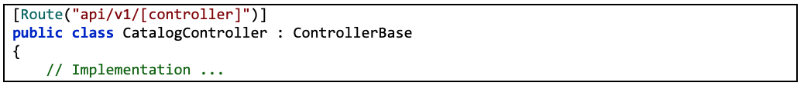As shown in the following code example, the version can be set by using the Route attribute in the Web API controller, which makes the version explicit in the URI (v1 in this case).
This versioning mechanism is simple and depends on the server routing the request to the appropriate endpoint. However, for a more sophisticated versioning and the best method when using REST, you should use hypermedia and implement HATEOAS (Hypertext as the Engine of Application State).
Swagger is a commonly used open source framework backed by a large ecosystem of tools that helps you design, build, document, and consume your RESTful APIs. It is becoming the standard for the APIs description metadata domain. You should include Swagger description metadata with any kind of microservice, either data-driven microservices or more advanced domain-driven microservices (as explained in following section).
The heart of Swagger is the Swagger specification, which is API description metadata in a JSON or YAML file. The specification creates the RESTful contract for your API, detailing all its resources and operations in both a human- and machine-readable format for easy development, discovery, and integration.
The specification is the basis of the OpenAPI Specification (OAS) and is developed in an open, transparent, and collaborative community to standardize the way RESTful interfaces are defined.
The specification defines the structure for how a service can be discovered and how its capabilities understood. For more information, including a web editor and examples of Swagger specifications from companies like Spotify, Uber, Slack, and Microsoft, see the Swagger site (https://swagger.io).
The main reasons to generate Swagger metadata for your APIs are the following.
Ability for other products to automatically consume and integrate your APIs. Dozens of products and commercial tools and many libraries and frameworks support Swagger. Microsoft has high-level products and tools that can automatically consume Swagger-based APIs, such as the following:
Ability to automatically generate API documentation. When you create large-scale RESTful APIs, such as complex microservice-based applications, you need to handle many endpoints with different data models used in the request and response payloads. Having proper documentation and having a solid API explorer, as you get with Swagger, is key for the success of your API and adoption by developers.
Swagger’s metadata is what Microsoft Flow, PowerApps, and Azure Logic Apps use to understand how to use APIs and connect to them.
There are several options to automate Swagger metadata generation for ASP.NET Core REST API applications, in the form of functional API help pages, based on swagger-ui.
Probably the best know is Swashbuckle which is currently used in eShopOnCntainers and we’ll cover in some detail in this guide but there’s also the option to use NSwag, that can generate Typescript and C# API clients, as well as C# controllers, from a Swagger or OpenAPI specification and even by scanning the .dll that contains the controllers, using NSwagStudio.
Generating Swagger metadata manually (in a JSON or YAML file) can be tedious work. However, you can automate API discovery of ASP.NET Web API services by using the Swashbuckle NuGet package to dynamically generate Swagger API metadata.
Swashbuckle automatically generates Swagger metadata for your ASP.NET Web API projects. It supports ASP.NET Core Web API projects and the traditional ASP.NET Web API and any other flavor, such as Azure API App, Azure Mobile App, Azure Service Fabric microservices based on ASP.NET. It also supports plain Web API deployed on containers, as in for the reference application.
Swashbuckle combines API Explorer and Swagger or swagger-ui to provide a rich discovery and documentation experience for your API consumers. In addition to its Swagger metadata generator engine, Swashbuckle also contains an embedded version of swagger-ui, which it will automatically serve up once Swashbuckle is installed.
This means you can complement your API with a nice discovery UI to help developers to use your API. It requires a very small amount of code and maintenance because it is automatically generated, allowing you to focus on building your API. The result for the API Explorer looks like Figure 6-8.
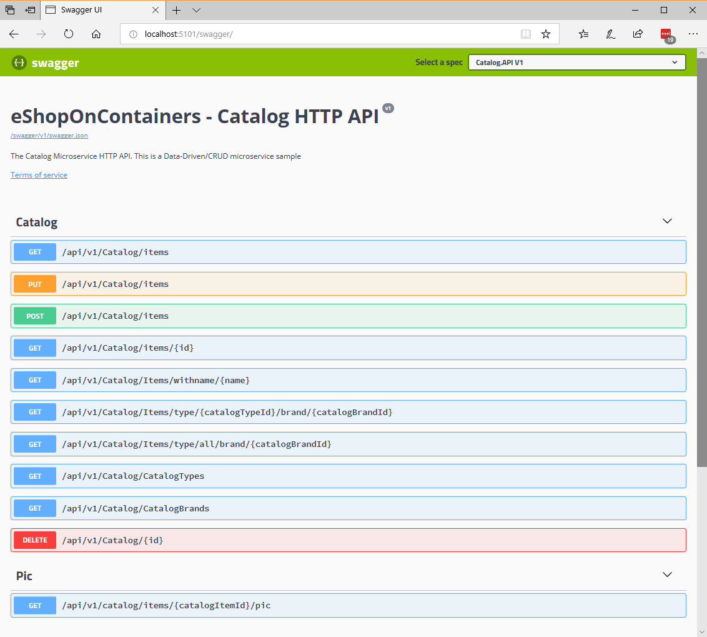
Figure 6-8. Swashbuckle API Explorer based on Swagger metadata—eShopOnContainers catalog microservice
The API explorer is not the most important thing here. Once you have a Web API that can describe itself in Swagger metadata, your API can be used seamlessly from Swagger-based tools, including client proxy-class code generators that can target many platforms. For example, as mentioned, AutoRest automatically generates .NET client classes. But additional tools like swagger-codegen are also available, which allow code generation of API client libraries, server stubs, and documentation automatically.
Currently, Swashbuckle consists of five internal NuGet packages under the high-level meta- package Swashbuckle.AspNetCore for ASP.NET Core applications.
After you have installed these NuGet packages in your Web API project, you need to configure Swagger in the Startup class, as in the following code (simplified):
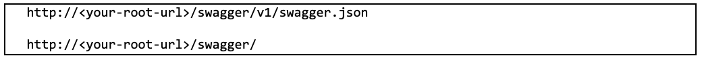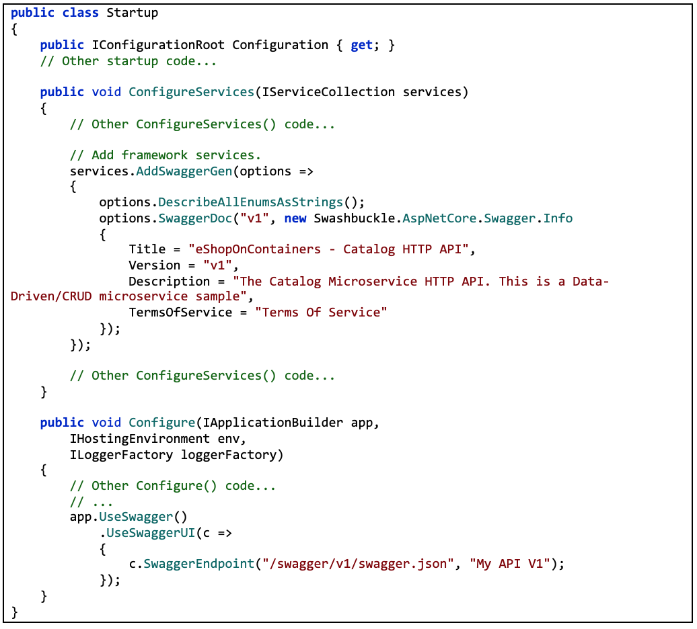Once this is done, you can start your application and browse the following Swagger JSON and UI endpoints using URLs like these:
You previously saw the generated UI created by Swashbuckle for a URL like http://<your-root-url>/swagger. In Figure 6-9 you can also see how you can test any API method.
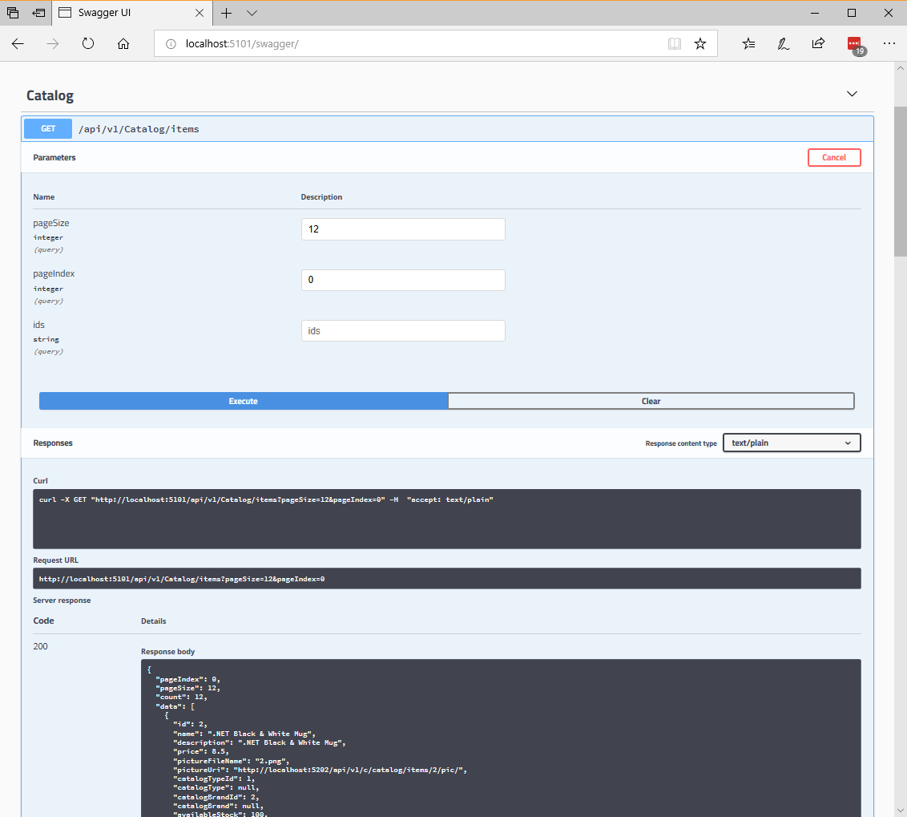
Figure 6-9. Swashbuckle UI testing the Catalog/Items API method
Figure 6-10 shows the Swagger JSON metadata generated from the eShopOnContainers microservice (which is what the tools use underneath) when you request <your-root-url>/swagger/v1/swagger.json using Postman.
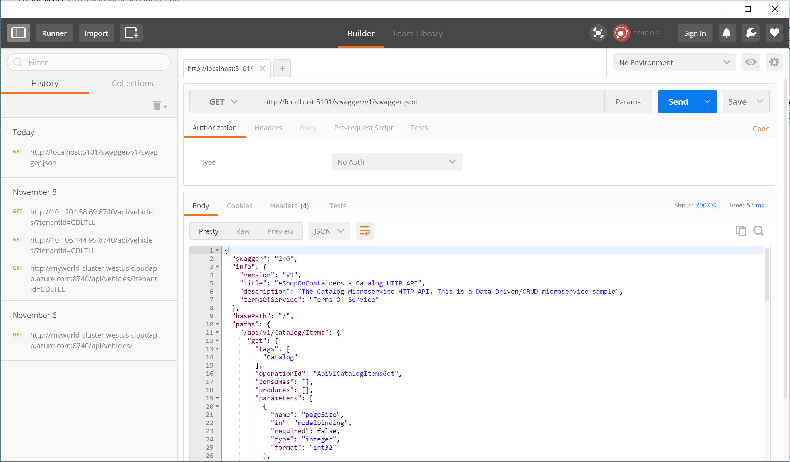
Figure 6-10. Swagger JSON metadata
It is that simple. And because it is automatically generated, the Swagger metadata will grow when you add more functionality to your API.
In this guide, the docker-compose.yml file was introduced in the section Step 4. Define your services in docker-compose.yml when building a multi-container Docker application. However, there are additional ways to use the docker-compose files that are worth exploring in further detail.
For example, you can explicitly describe how you want to deploy your multi-container application in the docker-compose.yml file. Optionally, you can also describe how you are going to build your custom Docker images. (Custom Docker images can also be built with the Docker CLI.)
Basically, you define each of the containers you want to deploy plus certain characteristics for each container deployment. Once you have a multi-container deployment description file, you can deploy the whole solution in a single action orchestrated by the docker-compose up CLI command, or you can deploy it transparently from Visual Studio. Otherwise, you would need to use the Docker CLI to deploy container-by-container in multiple steps by using the docker run command from the command line. Therefore, each service defined in docker-compose.yml must specify exactly one image or build. Other keys are optional, and are analogous to their docker run command-line counterparts.
The following YAML code is the definition of a possible global but single docker-compose.yml file for the eShopOnContainers sample. This is not the actual docker-compose file from eShopOnContainers. Instead, it is a simplified and consolidated version in a single file, which is not the best way to work with docker-compose files, as will be explained later.
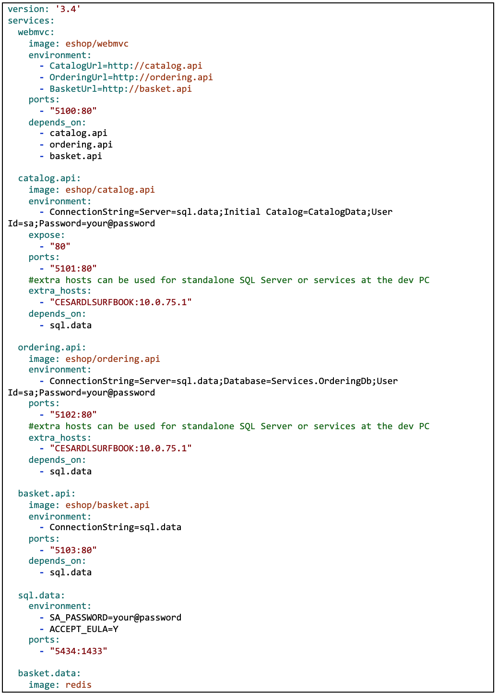The root key in this file is services. Under that key you define the services you want to deploy and run when you execute the docker-compose up command or when you deploy from Visual Studio by using this docker-compose.yml file. In this case, the docker-compose.yml file has multiple services defined, as 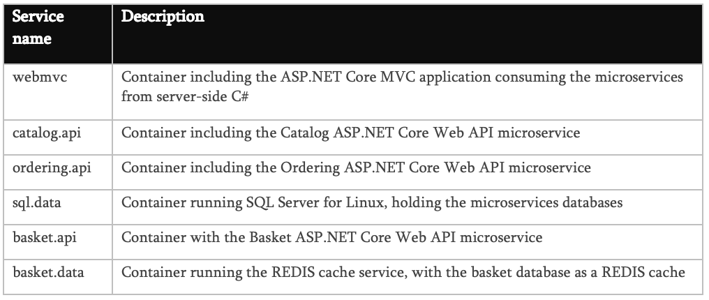described in the following table.
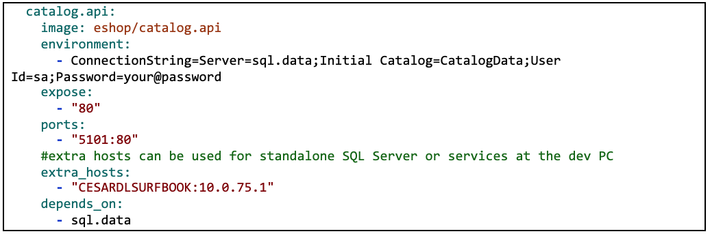Focusing on a single container, the catalog.api container-microservice has a straightforward definition:
This containerized service has the following basic configuration:
Because the connection string is defined by an environment variable, you could set that variable through a different mechanism and at a different time. For example, you could set a different connection string when deploying to production in the final hosts, or by doing it from your CI/CD pipelines in Azure DevOps Services or your preferred DevOps system.
There are also other, more advanced docker-compose.yml settings that we will discuss in the following sections.
The docker-compose.yml files are definition files and can be used by multiple infrastructures that understand that format. The most straightforward tool is the docker-compose command.
Therefore, by using the docker-compose command you can target the following main scenarios.
When you develop applications, it is important to be able to run an application in an isolated development environment. You can use the docker-compose CLI command to create that environment or use Visual Studio which uses docker-compose under the covers.
The docker-compose.yml file allows you to configure and document all your application’s service dependencies (other services, cache, databases, queues, etc.). Using the docker-compose CLI command, you can create and start one or more containers for each dependency with a single command (docker-compose up).
The docker-compose.yml files are configuration files interpreted by Docker engine but also serve as convenient documentation files about the composition of your multi-container application.
An important part of any continuous deployment (CD) or continuous integration (CI) process are the unit tests and integration tests. These automated tests require an isolated environment so they are not impacted by the users or any other change in the application’s data.
With Docker Compose you can create and destroy that isolated environment very easily in a few commands from your command prompt or scripts, like the following commands:
You can also use Compose to deploy to a remote Docker Engine. A typical case is to deploy to a single Docker host instance (like a production VM or server provisioned with Docker Machine).
If you are using any other orchestrator (Azure Service Fabric, Kubernetes, etc.), you might need to add setup and metadata configuration settings like those in docker-compose.yml, but in the format required by the other orchestrator.
In any case, docker-compose is a convenient tool and metadata format for development, testing and production workflows, although the production workflow might vary on the orchestrator you are using.
When targeting different environments, you should use multiple compose files. This lets you create multiple configuration variants depending on the environment.
You could use a single docker-compose.yml file as in the simplified examples shown in previous sections. However, that is not recommended for most applications.
By default, Compose reads two files, a docker-compose.yml and an optional docker-compose.override.yml file. As shown in Figure 6-11, when you are using Visual Studio and enabling Docker support, Visual Studio also creates an additional docker-compose.vs.debug.g.yml file for debugging the application, you can take a look at this file in folder obj\Docker\ in the main solution folder.
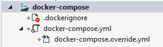
Figure 6-11. docker-compose files in Visual Studio 2017
You can edit the docker-compose files with any editor, like Visual Studio Code or Sublime, and run the application with the docker-compose up command.
By convention, the docker-compose.yml file contains your base configuration and other static settings. That means that the service configuration should not change depending on the deployment environment you are targeting.
The docker-compose.override.yml file, as its name suggests, contains configuration settings that override the base configuration, such as configuration that depends on the deployment environment. You can have multiple override files with different names also. The override files usually contain additional information needed by the application but specific to an environment or to a deployment.
A typical use case is when you define multiple compose files so you can target multiple environments, like production, staging, CI, or development. To support these differences, you can split your Compose configuration into multiple files, as shown in Figure 6-12.
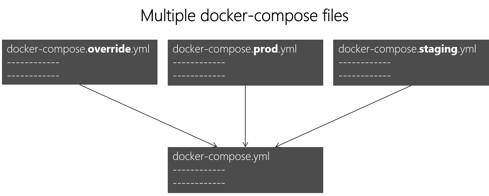
Figure 6-12. Multiple docker-compose files overriding values in the base docker-compose.yml file
You start with the base docker-compose.yml file. This base file has to contain the base or static configuration settings that do not change depending on the environment. For example, the eShopOnContainers has the following docker-compose.yml file (simplified with less services) as the base file.